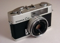

器材库 > 胶片袖珍相机（PS） > C35

规格总览
发布日期
1968
厂家推荐价格
14,700.00 （日元）
产品类型
35mm旁轴取景照相机
使用胶卷/胶片
35mm
画幅
24 x 36mm
停产
是
镜头及对焦
镜头
HEXANON 38/2.8
曝光控制
快门速度
1/30 - 1/650秒，B门
其它规格
电池
1枚H-C(MR44)型水银电池
颜色
银色, 黑色
尺寸
112×69×50mm
重量
360g
衡水2006-06-02 16:233.67 分
操作性 4.50功能性 3.00美观性 3.00趣味性 4.00耐用性 3.00性价比 4.50
乌木2005-01-30 23:284.58 分
操作性 4.50功能性 4.00美观性 5.00趣味性 4.50耐用性 4.50性价比 5.00
柯尼卡c352003-12-16 12:534.42 分
操作性 4.00功能性 4.00美观性 4.50趣味性 4.50耐用性 4.50性价比 5.00
张振宁2003-10-27 23:214.33 分
操作性 4.50功能性 4.00美观性 4.50趣味性 4.00耐用性 4.50性价比 4.50
BlueVisor2002-12-27 04:084.33 分
操作性 4.00功能性 4.00美观性 4.00趣味性 4.00耐用性 5.00性价比 5.00

该产品暂无存档的产品图